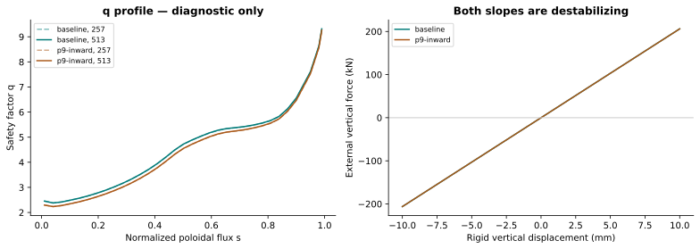
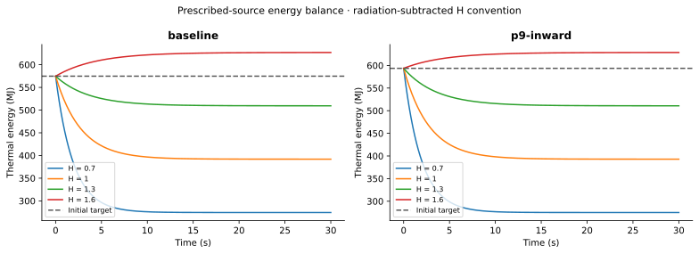
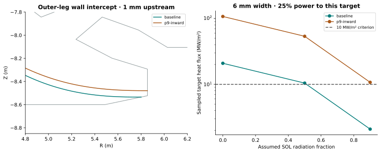
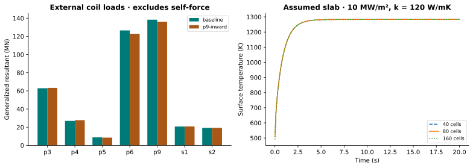

Both configurations push a rigid vertical displacement farther from the midplane when wall currents and feedback are omitted.
OPENSTEP-002 · EXTENDED SIMULATIONS · 20 NOV 2026
Testing the design
beyond equilibrium.
Move the p9 coils 10 cm toward the midplane. Then test the numerical result, vertical response, power balance, exhaust geometry and engineering loads.
These calculations expose design constraints. The executed reduced models do not establish full MHD stability, predictive confinement, detachment, component qualification or net electricity.
The changed coil geometry can move the wall intercept and concentrate the imposed exhaust power. Radiation assumptions matter.
A separate solve tests the coil change with the baseline pressure profile and total plasma current held fixed.
Loading recorded simulation values…
What was actually simulated
| Test | Recorded finding | Boundary of the claim |
|---|
Magnetic response

q and beta describe the equilibrium. The vertical-force test holds the plasma current distribution rigid and the external coil currents fixed. Neither calculation supplies a wall-coupled or three-dimensional MHD eigenmode spectrum. Open figure.

Confinement and power balance
The source design supplies 129 MW auxiliary heating, approximately 311 MW alpha heating and 299 MW core radiation. The energy calculation varies the assumed confinement multiplier and source strengths.
Explore recorded energy-balance runs
H here uses radiation-subtracted transport power. Alpha heating and radiation are prescribed during each run; there is no self-consistent burn feedback.

Exhaust reaches a physical wall

The plot samples a line launched 1 mm outside the midplane separatrix, using a 6 mm exponential width and 25% of the separatrix power allocated to one target. The 10 MW/m² line is the published steady target criterion. The real peak and detached plasma require additional modelling. Open figure.

Coil loads and target heating

Coil loads omit self-force and structural load paths. The slab assumes constant conductivity, a perfectly clamped 450 K back face and no erosion or phase change. Temperatures outside that model's useful range are retained in the raw sweep; they are not qualified operating points.
Net-electric accounting is conditional
Using the source design's prescribed fusion power, efficiency and parasitic-load assumptions can change the sign of net electricity. This is a systems budget, not power generated by the simulated coils.
Assumes complete thermal recovery and unity blanket energy multiplication. Plant availability, tritium breeding, neutron damage and actual cooling hardware are unresolved.
What remains untested
Failed and interrupted numerical attempts are retained alongside the accepted runs. Read the development record.